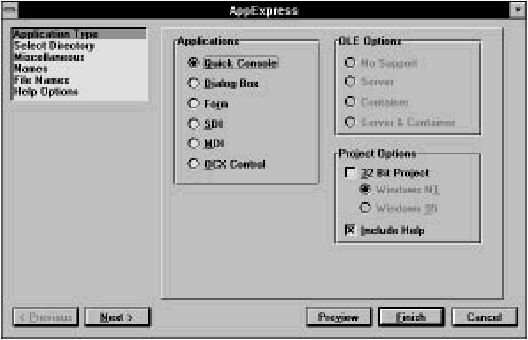
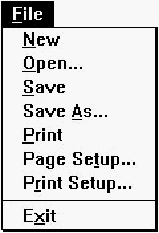

Home
| Search
| CTG
| RTL
| IDDE
| STL
Home
| Search
| CTG
| RTL
| IDDE
| STL
Last update Fri Apr 28 16:30:17 2006
|
Reference 1. Introducing Digital Mars C++ 2. Introducing the IDDE Part 2: Creating an Application with Digital Mars C++ 3. Starting a Project and Defining Workspaces 4. Generating an Application Framework 5. Defining Classes and Their Hierarchies 6. Editing Program Code 7. Adding Look and Feel with Resources 8. Testing an Application Part 3: Learning Digital Mars C++ by Example 9. Introduction to the Tutorial 10. Lesson 1: Create the DOS Application 11. Lesson 2: Generate an Application Framework 12. Lesson 3: Customize the Interface 13. Lesson 4: Add Messages with ClassExpress 14. Lesson 5: Add a Dialog Box with ClassExpress Part 4: More about Creating Programs 15. More about Projects and Workspaces 16. More about Project Build Settings 17. More about AppExpress 18. More about ClassExpress 19. Class Editor Reference 20. Hierarchy Editor Reference 21. Text Editor Reference 22. Using Version Control Part 5: More about Testing Programs 23. Controlling and Configuring the Debugger 24. Commands Available in Debugging Mode Part 6: About Managing Resources 25. ResourceStudio Resource Editor 26. Dialog Editor 27. Menu, Accelerator and String Table Editors 28. Bitmap, Cursor, Icon, and Font Editors 29. Version Information and Custom Resource Editors Part 7: Appendixes A. Expression Evaluation B. IDDE Settings and Command-Line Options C. Using NetBuild |
17. More about AppExpressChapter 4, "Generating an Application Framework," defines an application framework and outlines the steps for generating a skeleton application using AppExpress. This companion reference chapter provides further detail concerning application types, program detail, program architecture, message maps, as well as generating and examining source files.Selecting an Application TypeSelect Application Type from the list of steps at the upper left of the AppExpress window. The options pane at the right contains three groups of controls, labeled Applications, OLE Options, and Project Options. [Figure 17-1 AppExpress application type options ApplicationsThe group of Applications radio buttons contains six categories of applications. Of these, only Quick Console does not use the MFC library. These categories are:
OLE Options groupThe OLE Options group is enabled only if you select the SDI or MDI application type. The group contains four radio buttons:
Project options groupThe Project Options group contains two check boxes, Include Help and 32-Bit Project.Checking Include Help tells AppExpress to generate the files necessary to build a Windows Help file for the specified application type. AppExpress creates a Help subdirectory named hlp beneath the project directory, which contains those files. It also creates the file makehelp.bat, which you run to compile a Windows Help file from the files AppExpress provides. For all application types other than Quick Console, checking the 32- Bit Project box causes the MFC 3.0 to be used instead of the 16-bit MFC 2.5. For Quick Console, leaving the box unchecked results in a skeleton WINIO program being generated. WINIO is a library that allows you to write simple Windows programs that perform input/output using standard C library functions (in other words, those functions prototyped in stdio.h.). If the 32-Bit Project box is checked, a Win32 console application is generated. Win32 console applications can only be run under Windows NT and Windows 95 (and not under Win32s). If you check the 32-Bit Project box, your application can call the Win32 API. Providing Miscellaneous InformationSelecting Miscellaneous in the steps list opens the Miscellaneous options page. This page lets you provide copyright information as well as a name for the project.
The Document/View ArchitectureThe MFC library provides a number of C++ classes that, when used together, create the object-oriented structure for your application. These are the document, view, frame window, and document template classes. The Form or Database, SDI, and MDI application types all use document/view architecture. This section introduces the MFC classes that implement this program structure.Frame windowThe frame window contains views on the data used by the application. In an SDI application, there is only one frame window, which is derived from the MFC class CFrameWnd. In an MDI application, there is a main frame window derived from CMDIFrameWnd, as well as document frame windows derived from CMDIChildWnd.In addition to containing child view windows, the frame window handles all window management— for example, minimizing, maximizing, and closing the window. A standard toolbar and status bar also are displayed in this window. ViewEach frame window can contain a view on the data used by the application. A view is a C++ class derived from the class CView. Your application interacts with the user through this view class.In the SDI frame window, AppExpress generates a child view window that takes up the client area of the frame window. (The client area refers to the part of the window in which the program's data is displayed. It excludes the window border, caption, and menu.) In an SDI application, this view window is given the default class name CSDIAPPView. All display and printing of the application's data is done using this view window and its class. The user's manipulation of the data is also done through the view. DocumentA document is a C++ class, derived from CDocument, that represents the data in your application. For example, a standard Windows application has a File menu that is a variant of the one shown in Figure 17-2. [Figure 17-2 Standard Windows file menu] When you choose Open from this menu, you are telling the program to open a document. Note: The word document refers to whatever type of data is used by the application. It does not necessarily mean a text-based word processing document. As the developer of the application, you write code in a CDocument-derived class to handle the operations on the File menu. An example of a skeleton CDocument-derived class follows.
class CSDIAPPDoc : public CDocument
{
protected: // create from serialization only
CSDIAPPDoc();
DECLARE_DYNCREATE(CSDIAPPDoc)
// Attributes
public:
// Operations
public:
// Implementation
public:
virtual ~CSDIAPPDoc();
virtual void Serialize(CArchive& ar);
#ifdef _DEBUG
virtual void AssertValid() const;
virtual void Dump( CDumpContext& dc) const;
#endif
};
Notice that no member variables are included with this class. It is up
to you as the developer to add whatever data you need for your
application.
In the example above, a Serialize method is included in the Implementation section of the class definition. This method, inherited from the base class, CDocument, performs object storage and retrieval to and from a disk file. In fact, the framework generated by AppExpress already handles the File Open, File Save, and File Save As operations by automatically calling the Serialize method in your CDocument-derived class. You can use the Serialize method to implement object persistence— the ability to preserve the complete state of objects across multiple executions of the program. When you add your own member variables to this class, you should also override the Serialize method to read and write the added variables. Pulling it all together: the document templateCreating and managing an application's frame window, views, and documents is the job of another C++ class, derived from the CDocTemplate class. In an SDI application, the CSingleDocTemplate class is used; in an MDI application, the CMultiDocTemplate class is used.For more information, refer to the Microsoft Foundation Class Library Reference. More about Message MapsThis section outlines the purpose of message maps and identifies the different parts of a message.The rationale for mapsUsing message maps saves you development time. The reason for this productivity improvement lies in the event-driven nature of Windows applications.As a user of a Windows application clicks on buttons, selects menus, drags the mouse to highlight text, or performs any other mouse or keyboard action, the application is notified of this action through a Windows message. This message contains pertinent contextual information such as the screen coordinates at which the mouse was clicked, or an identifier indicating the button that was clicked. The application developer decides which messages the application should respond to and how. If the developer decides not to write code to handle a particular message, the message can still be passed back to Windows to perform default processing. If you write a Windows application using the Windows SDK, these decisions are most likely implemented as a switch statement in the main window procedure (usually referred to as a WndProc). For example, your window procedure might look like this:
LRESULT CALLBACK WndProc(HWND hwnd,
UINT message, WPARAM wParam, LPARAM lParam)
{
switch (message)
{
case WM_PAINT:
PAINTSTRUCT ps;
BeginPaint(hwnd, &ps);
MyPaintProc(hwnd, ps. hdc);
EndPaint(hwnd, &ps);
return(0);
case WM_CREATE:
hmenu = GetSystemMenu(hwnd, FALSE);
AppendMenu(hmenu, MF_SEPARATOR, 0, (LPSTR) NULL);
AppendMenu(hmenu, MF_STRING, IDM_ABOUT, "About...");
break;
case WM_DESTROY:
PostQuitMessage(0);
return(0);
}
return DefWindowProc(hwnd, message, wParam, lParam);
}
If your application must respond to many types of messages, the
window procedure can get quite large and become difficult to
maintain. One of the advantages of the MFC library is the use of
message maps, which drastically reduce the amount of code
required to process messages.
Components of the message mapA message map is composed of the three components described in this section.BEGIN_MESSAGE_MAP, END_MESSAGE_MAP macrosAll message maps must begin and end with these macros. At run-time, the expanded macro sets up the message mapping between events and the code to handle the events.ClassExpress-specific comment sectionsAppExpress and ClassExpress add special-purpose comments to the message map so that ClassExpress knows where to add or remove mapping macros. Because ClassExpress provides an easy-to-use interface to your C++ class mappings, you should not manually edit the comments or code in a message map.Message-mapping macrosIf a C++ class has a method (that is, a class member function) to respond to a message, ClassExpress writes a message-mapping macro for that message in the class's message map. This macro begins with the prefix ON_, usually followed by the macro name for the Windows message. The mapping macro takes two parameters:
Generating and Examining the Source FilesGenerating the source files of the application framework is as easy as clicking on a button. After the files are generated, you may want to examine the header and implementation files. AppExpress typically generates one header and one implementation file for each class. (An exception is the CAboutDlg class, which shares files with the application class.) Examining a few generated files in the IDDE, setting breakpoints on methods, and tracing through their code will help you understand the internal workings of the frameworks that AppExpress generates. At that point you will then be ready to edit the code in order to enhance it as needed.To generate and examine sample source files:
// mainfrm.h : interface of the CMainFrame class
//
// Copyright (c) XYZ Corporation, 1994. All Rights Reserved.
//
//
class CMainFrame : public CFrameWnd
{
protected: // create from serialization only
CMainFrame();
DECLARE_DYNCREATE(CMainFrame)
// Attributes
public:
// Operations
public:
// Implementation
public:
virtual ~CMainFrame();
#ifdef _DEBUG
virtual void AssertValid() const;
virtual void Dump(CDumpContext& dc) const;
#endif
protected: // control bar embedded members
CStatusBar m_wndStatusBar;
CToolBar m_wndToolBar;
// Generated message map functions
protected:
//{{ AFX_MSG(CMainFrame)
afx_msg int OnCreate(LPCREATESTRUCT lpCreateStruct);
// ClassExpress will add and remove member functions here.
// DO NOT EDIT these blocks of generated code !
//}} AFX_MSG DECLARE_MESSAGE_MAP()
};
The file contains:
In the protected section of the class declaration is a prototype for a function that is called as part of the class's message map. As indicated, do not edit the code in this section because it is reserved for ClassExpress. AppExpress also generates a .cpp, or implementation, file for the CMainFrame class. This file has the same base name, mainfrm, as the class header file, but has the .cpp extension. To examine mainfrm.cpp, open this file in an IDDE Source window. This implementation file contains the following components:
|